Junta de cuadro FBL 2
Es fuerte, segura, y siempre es fácil de utilizar.
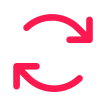
Plegado fácil
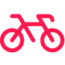
Practicidad
Diseño Compacto
Es fuerte, segura, y siempre es fácil de utilizar.

Ayuda a resistir las fuerzas de torsión.
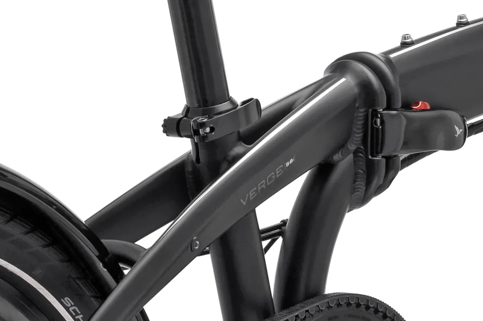
La opción de manejar más arriba o más abajo.
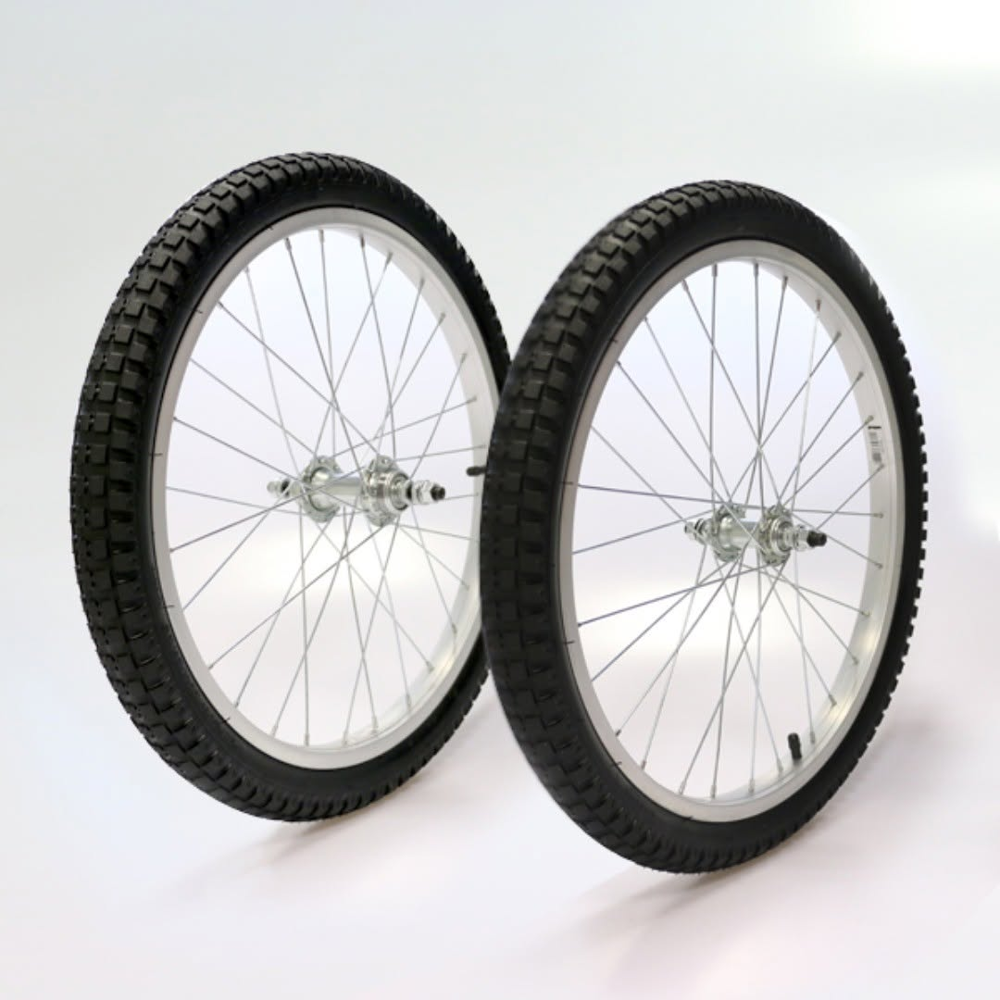
20" y protección contra pinchazos
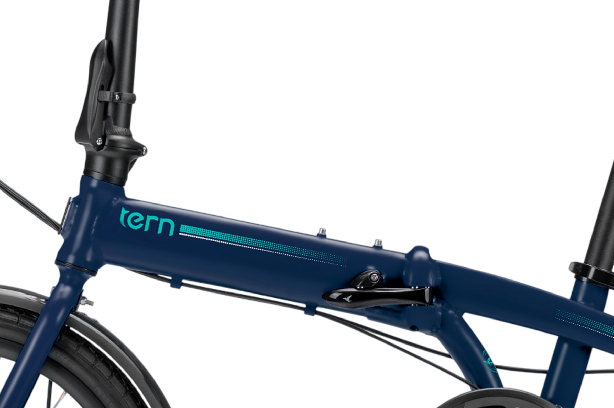
De aluminio ligero y resistente

Shimano Tourney de 7 velocidades
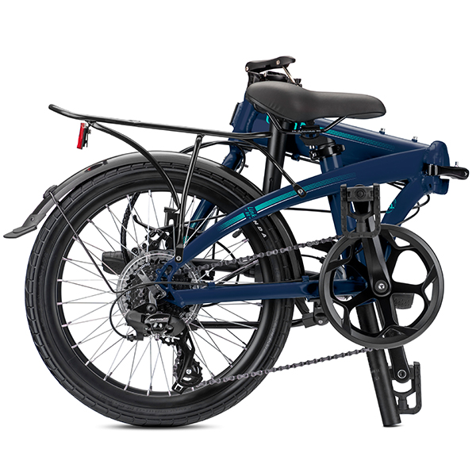
Diseño fácil de transportar
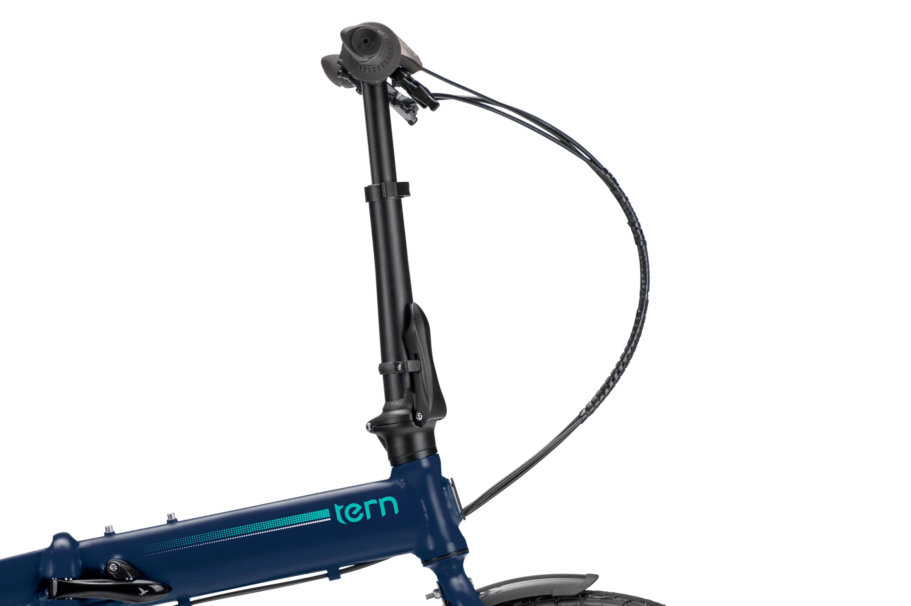
Bajar el manubrio y asiento.
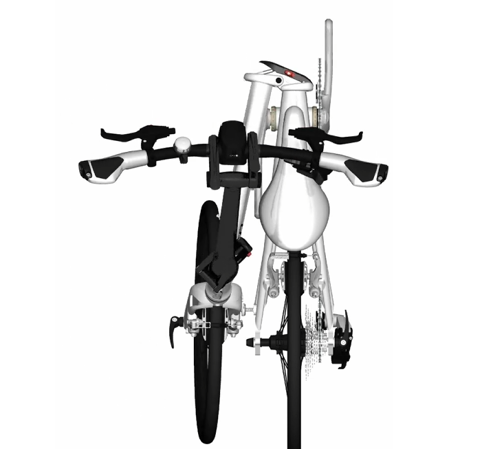
Plegar los pedales.
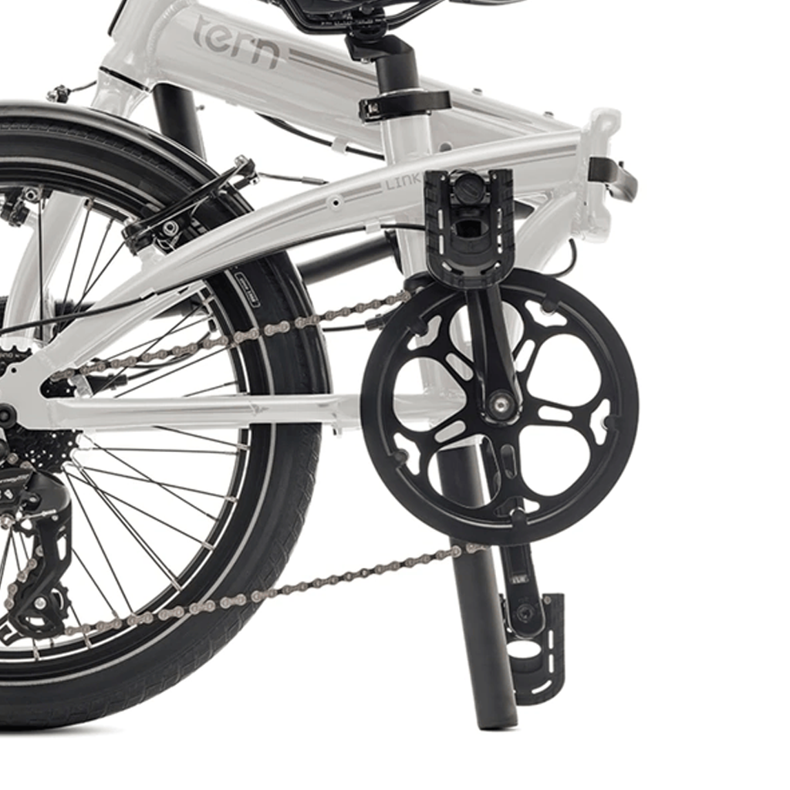
Doblar el cuadro por la bisagra central.
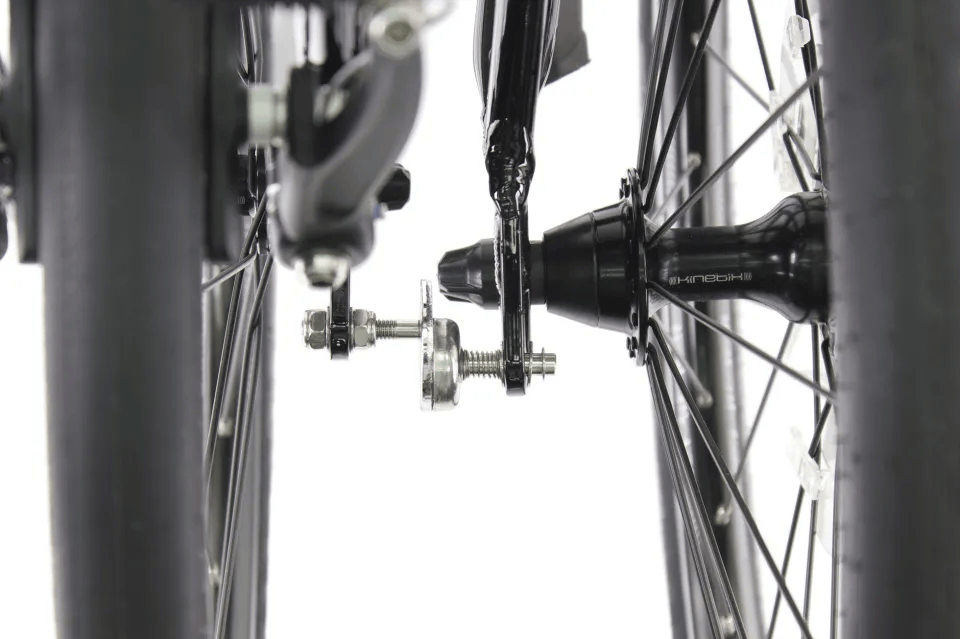
Asegurar con el imán.
La Tern Link B7 está pensada para quienes buscan movilidad práctica y versátil. Se pliega en solo 10 segundos, permitiendo transportarla fácilmente en subte, coche o tren.
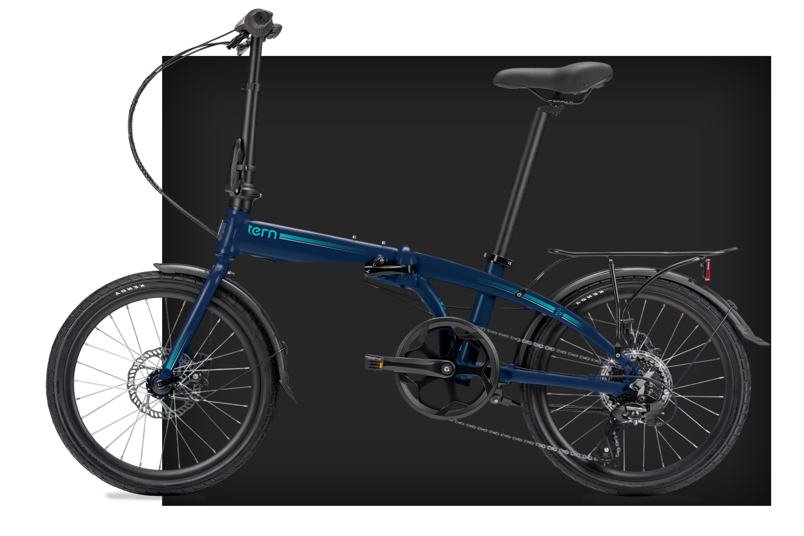